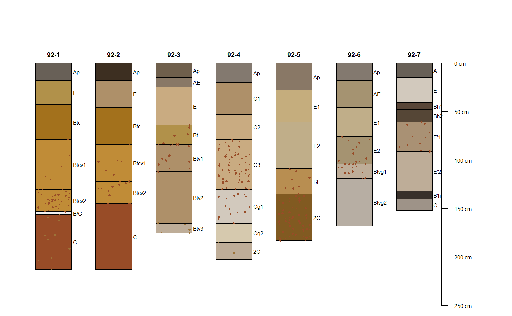
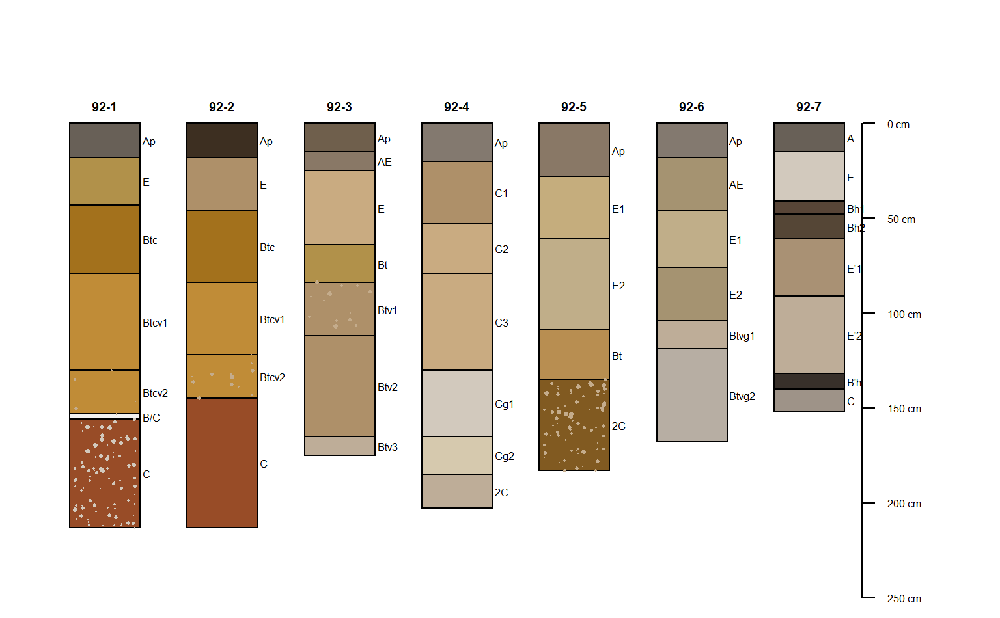
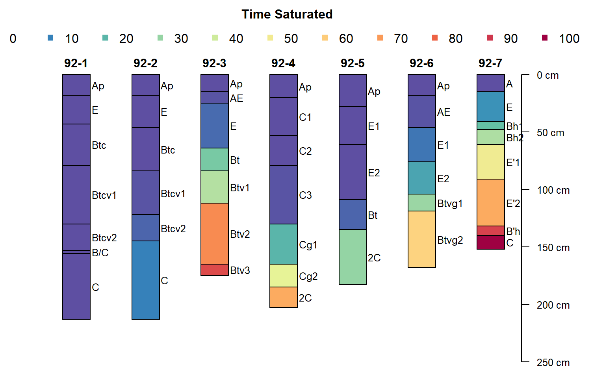
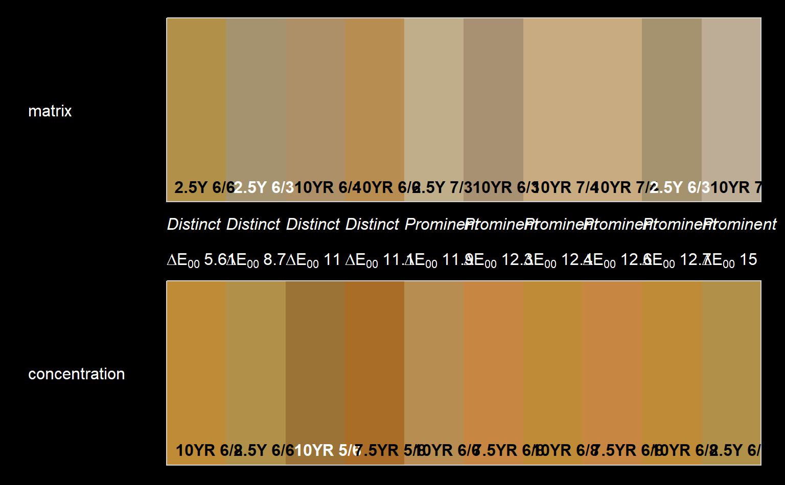
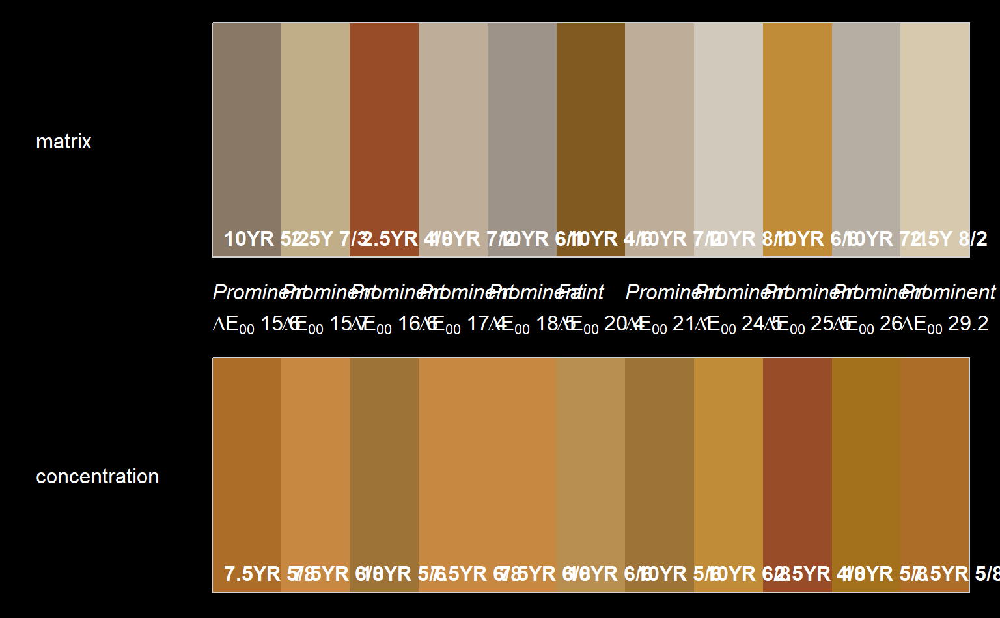
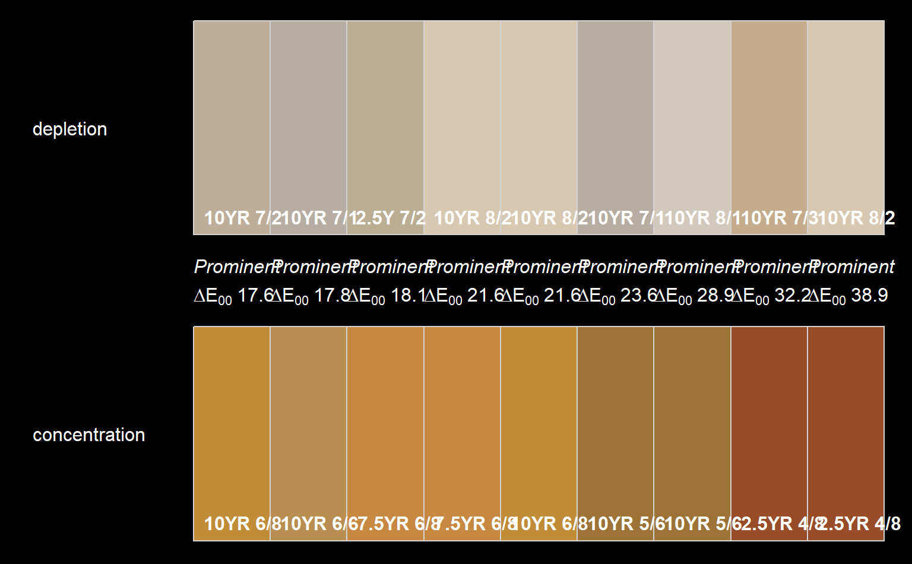

Select soil morphologic data from "Redoximorphic Features as Indicators of Seasonal Saturation, Lowndes County, Georgia". This is a useful sample dataset for testing the analysis and visualization of redoximorphic features.
data(jacobs2000)
A SoilProfileCollection object.
Features as Indicators of Seasonal Saturation, Lowndes County, Georgia
Jacobs, P. M., L. T. West, and J. N. Shaw. 2002. Redoximorphic Features as Indicators of Seasonal Saturation, Lowndes County, Georgia. Soil Sci. Soc. Am. J. 66:315-323. doi:10.2136/sssaj2002.3150
# load data(jacobs2000) # basic plot par(mar=c(0,1,3,3)) plot(jacobs2000, name='name', color='matrix_color', width=0.3)# add concentrations addVolumeFraction(jacobs2000, 'concentration_pct', col = jacobs2000$concentration_color, pch = 16, cex.max = 0.5)addVolumeFraction(jacobs2000, 'depletion_pct', col = jacobs2000$depletion_color, pch = 16, cex.max = 0.5)# time saturated plotSPC(jacobs2000, color='time_saturated', cex.names=0.8, col.label = 'Time Saturated')# color contrast: matrix vs. concentrations cc <- colorContrast(jacobs2000$matrix_color_munsell, jacobs2000$concentration_munsell) cc <- na.omit(cc) cc <- cc[order(cc$dE00), ] cc <- unique(cc) par(bg='black', fg='white') colorContrastPlot(cc$m1[1:10], cc$m2[1:10], labels = c('matrix', 'concentration'))# color contrast: depletion vs. concentrations cc <- colorContrast(jacobs2000$depletion_munsell, jacobs2000$concentration_munsell) cc <- na.omit(cc) cc <- cc[order(cc$dE00), ] cc <- unique(cc) par(bg='black', fg='white') colorContrastPlot(cc$m1, cc$m2, labels = c('depletion', 'concentration'))